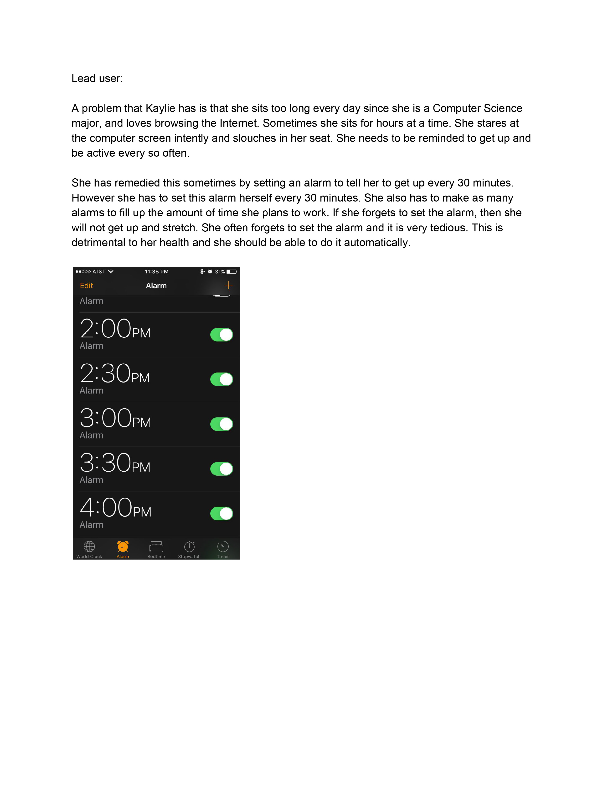

10 Places to Find Lead Users
People who are on a diet.
Organization that always sells things on library walk
Student organization that has meetings.
Professors that organize and mark iClicker 2 grades.
Autograder users who want to communicate more effectively with tutors
College students who drink too much and need a way to control it.
Bio researchers who have new mass spec gadget but needs a way to efficiently queue using it.
People who are not in computational fields that want to learn how to code.
People who listen to music for 5 hours a day.
College students who want to save money by cooking but have no time.
Selected Domain: Student who leads an unhealthy lifestyle at UCSD.
